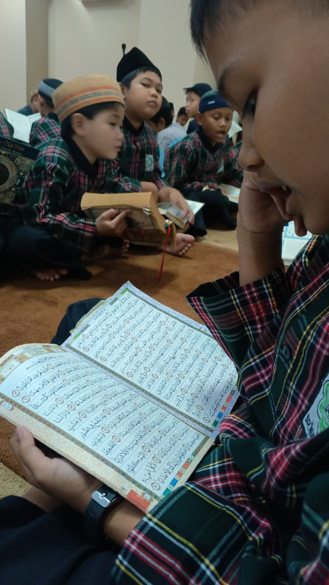
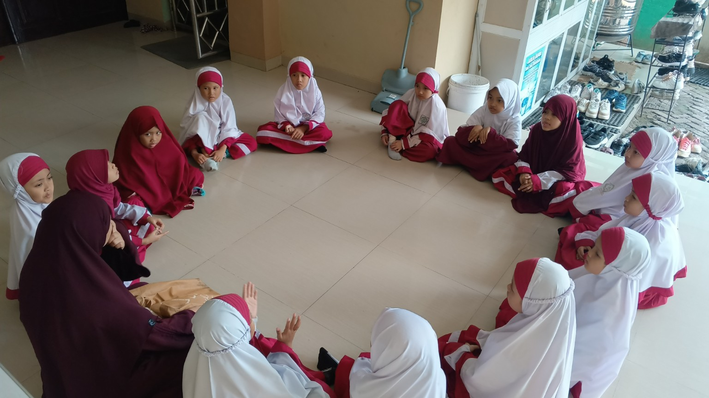
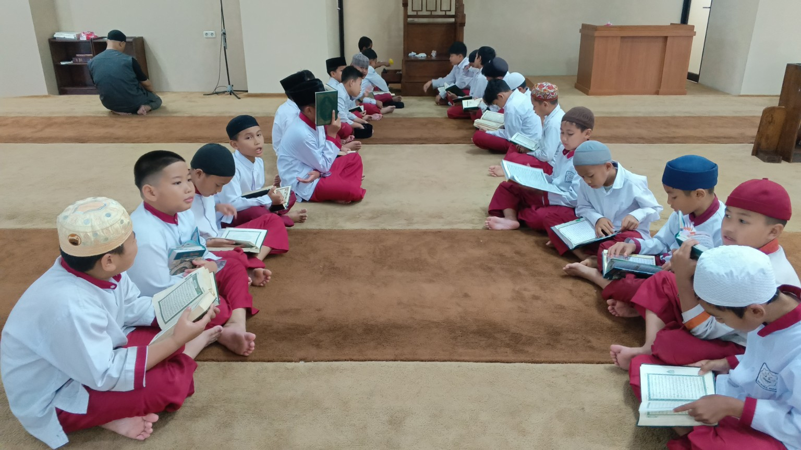
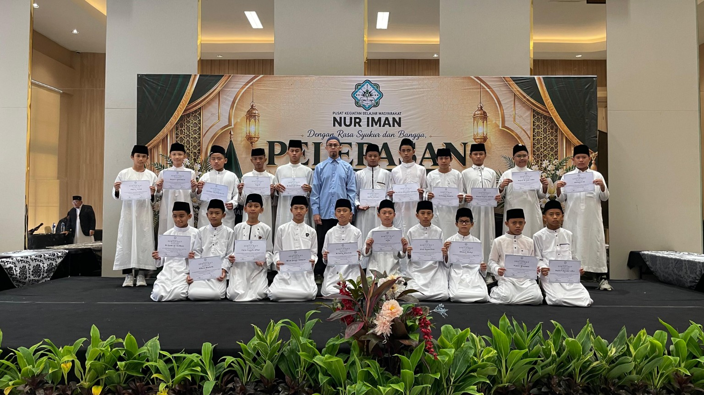
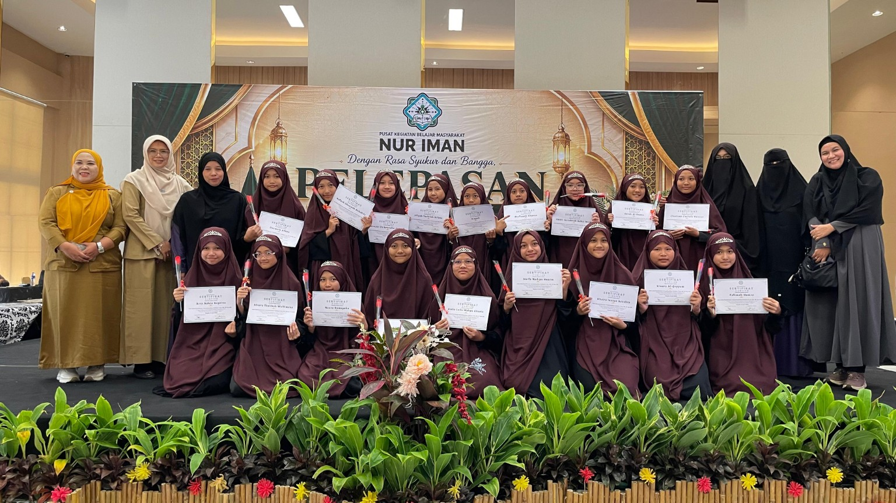

SD
Sekolah Dasar
Pembelajaran Al-Qur’an, penguatan adab, pembinaan karakter, dan lingkungan belajar Islami.
Lihat Profil SD →Bersama membangun generasi yang cerdas, berilmu, beradab, dan beriman.
NUR IMAN ISLAMIC SCHOOL (PKBM NUR IMAN) hadir untuk membangun lingkungan belajar yang Islami, aman, nyaman, dan mendukung perkembangan akademik, adab, serta kecintaan kepada Al-Qur’an dan As-Sunnah.
Ilmu, adab, akhlak, dan kemandirian menjadi bekal peserta didik untuk masa depan.
Informasi setiap jenjang tersedia pada halaman profil masing-masing.
Pembelajaran Al-Qur’an, penguatan adab, pembinaan karakter, dan lingkungan belajar Islami.
Lihat Profil SD →Pendidikan ilmu, pembinaan kemandirian, penguatan akademik, dan pembelajaran Al-Qur’an.
Lihat Profil SMP →Pembelajaran Al-Qur’an menjadi bagian penting dalam perjalanan pendidikan di NIIS. Dokumentasi setiap jenjang ditempatkan pada halaman profil khususnya.
Pembiasaan membaca Al-Qur’an dan kegiatan pembinaan.
Lihat dokumentasi SD →Pembelajaran Al-Qur’an dan penguatan karakter remaja.
Lihat dokumentasi SMP →Penguatan pemahaman dan praktik nilai-nilai Islam.
Membimbing bacaan dan hafalan Al-Qur’an secara bertahap.
Membangun kebiasaan baik dan akhlak mulia.
Suasana belajar yang nyaman dan bersahabat.
Mendukung kemampuan belajar dan pengetahuan peserta didik.
Menumbuhkan tanggung jawab dan kemandirian.
Pratinjau dokumentasi SD yang telah dipetakan dari arsip proyek.

Pembelajaran Al-Qur’an
Pembinaan siswi
Belajar berkelompok
Kelulusan kelas 6 putra
Kelulusan kelas 6 putriDokumentasi SMP ditampilkan khusus pada halaman Profil SMP, tidak pada Beranda atau Galeri umum.
Ruang belajar nyaman untuk mendukung konsentrasi peserta didik.
Mendukung pembelajaran dan pengembangan keterampilan peserta didik.
Suasana belajar yang bersahabat dan memperhatikan kebutuhan anak.
Lingkungan belajar yang mendukung proses pendidikan.
Rincian berikut mengikuti data pada website lama dan perlu konfirmasi admin sebelum publikasi.
Biaya formulir pendaftaran: Rp 300.000,-. Konfirmasikan rincian dan ketentuan terbaru kepada Admin PKBM NUR IMAN.
Isi formulir singkat. Data akan diteruskan ke WhatsApp Admin untuk konfirmasi pendaftaran.
Minat → Kontak → Formulir → Pembayaran → Berkas → Verifikasi
Langkah berikutnya: konfirmasi dengan Admin NI School melalui WhatsApp.Jl. Tumaritis 1 No. 8, Harjamukti, Cimanggis, Depok
WhatsApp Admin